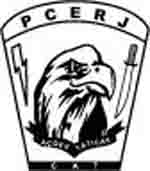

A imprensa está aproveitando ao máximo o repentino interesse público pelas forças policiais táticas após a veiculação do filme Tropa de Elite, sobre o BOPE da PMERJ.
Agora eles foram até a Polícia Civil, e fizeram uma reportagem falando sobre o CAT (Curso de Ações Táticas) da PCERJ.
Esta será a 5ª turma do curso, que exige do candidato um excelente preparo físico, habilidade no manuseio de armas de fogo, aprovação em exame psicotécnico e avaliação médica. Rompidas estas barreiras, o candidato inicia efetivamente o Curso de Ações Táticas, onde terão treinos específicos de tiro, defesa pessoal, primeiros socorros, direção defensiva e ofensiva, operações aéreas e marítimas, rapel, noções de explosivos, dentre outros.Um de nossos planos para o Caso de Polícia é justamente falar sobre as peculiaridades de cada Divisão, Delegacia ou Setor Especializado, mas o assunto será abordado em época mais conveniente. Agora só nos interessa a negociação com o Governo, e a expectativa de que o governador cumpra efetivamente as promessas que fez para se eleger.
Enquanto isso aproveitem esse breve vídeo do Curso de Ações Táticas da PCERJ; enfim, não nos custa nada divulgar.